Chat, files and screen sharing for your studio. Install one server, put the client on every PC, and your whole team can talk, send files of any size and see who reports to whom, without anything leaving your network.
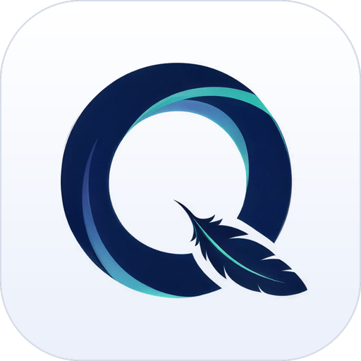
Quillo is built for how VFX and animation teams actually work: busy rooms, huge files, shot names, supervisors, dailies and deadlines. Here is what is in version 1.11.1.
FAL_030 link to everything said about the shot..ics import from Outlook or Google.Quillo has no cloud and needs no internet. Every message and file goes between your PCs and your own server, on your own LAN.
Chats and rooms on the left, the conversation or page on the right, and a rail for People, Rooms, the org chart, news and files.
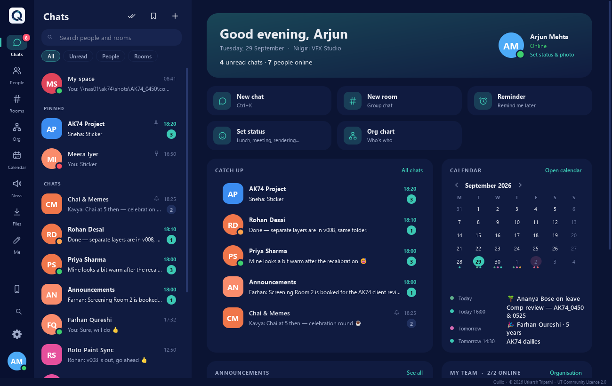
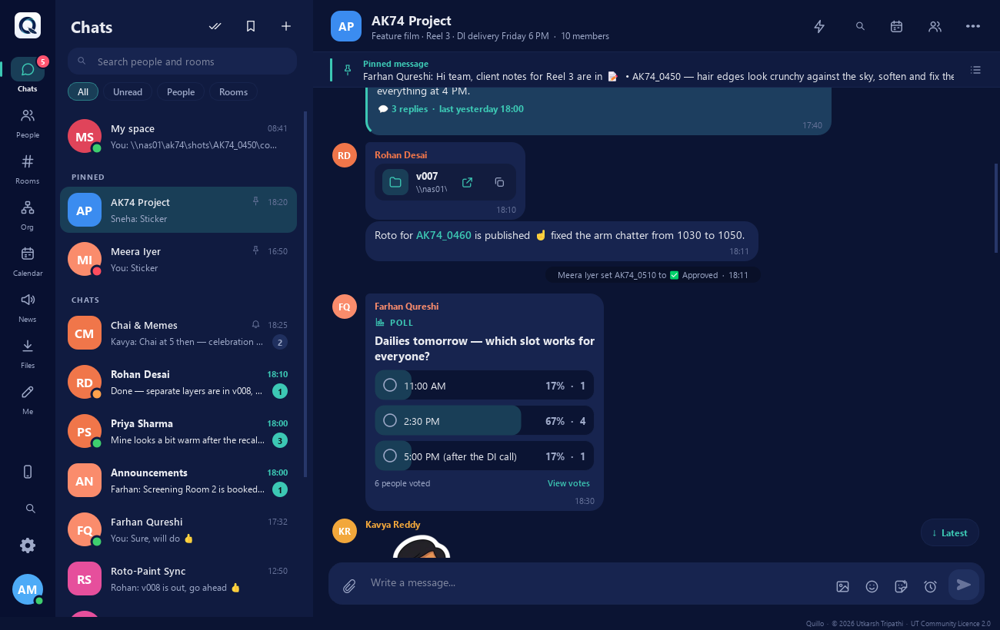
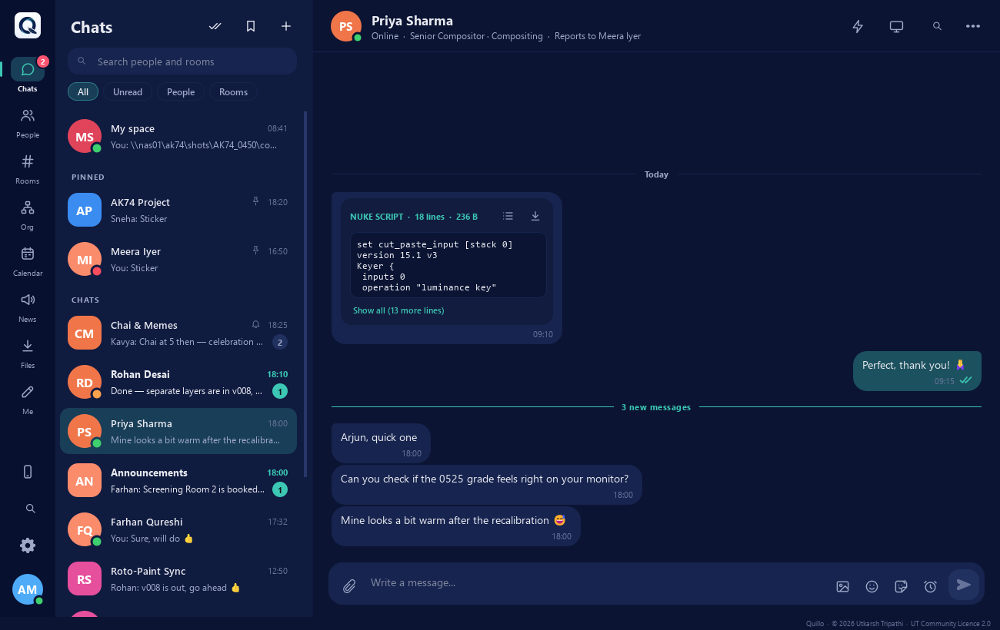
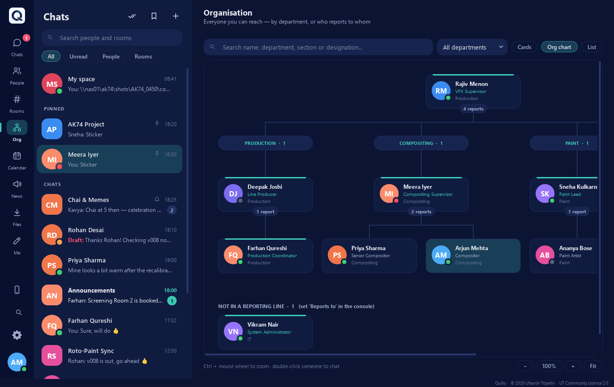
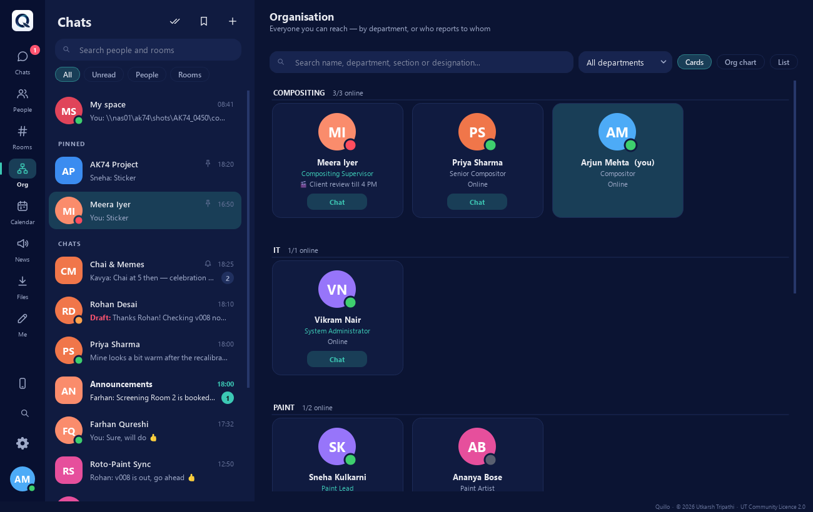
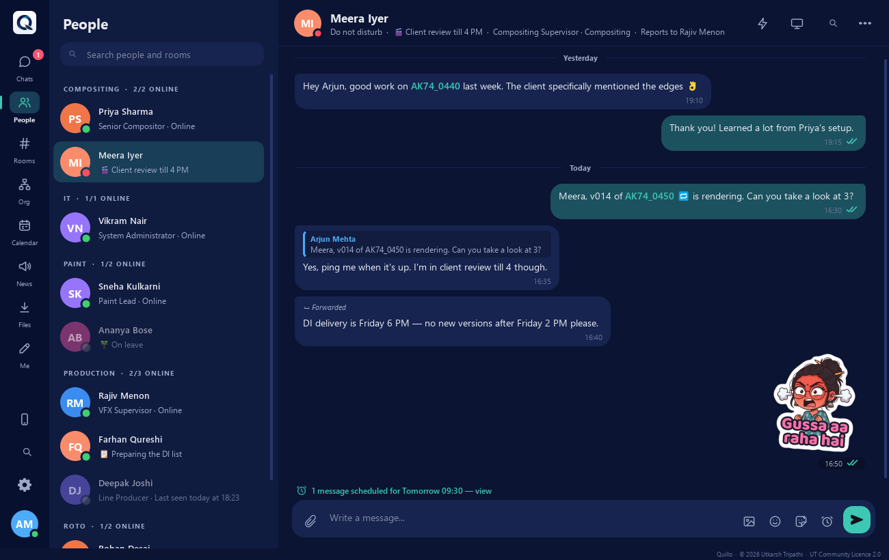
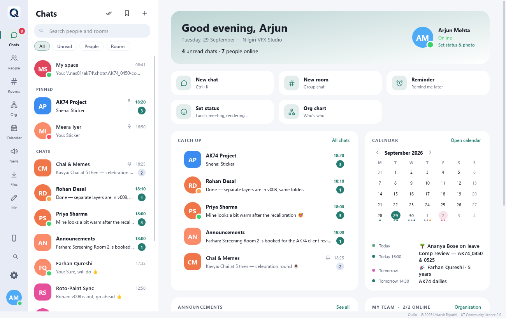
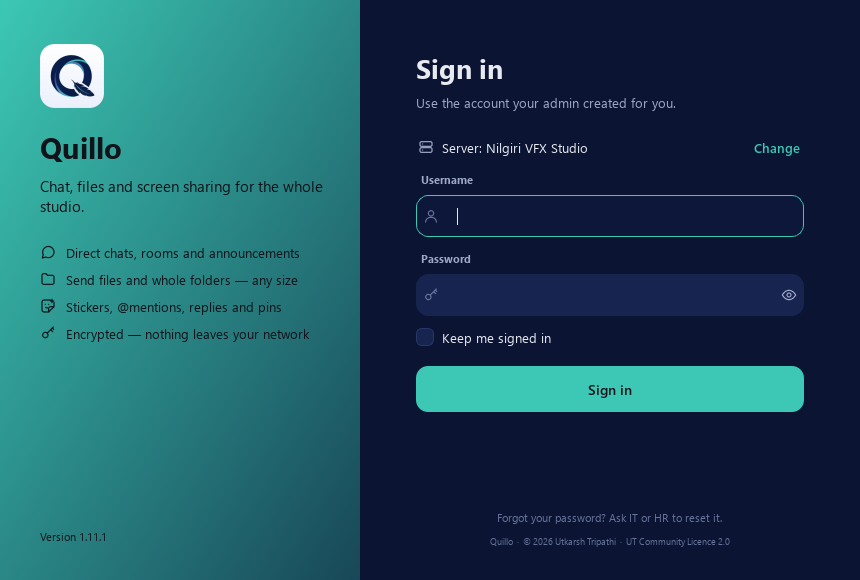
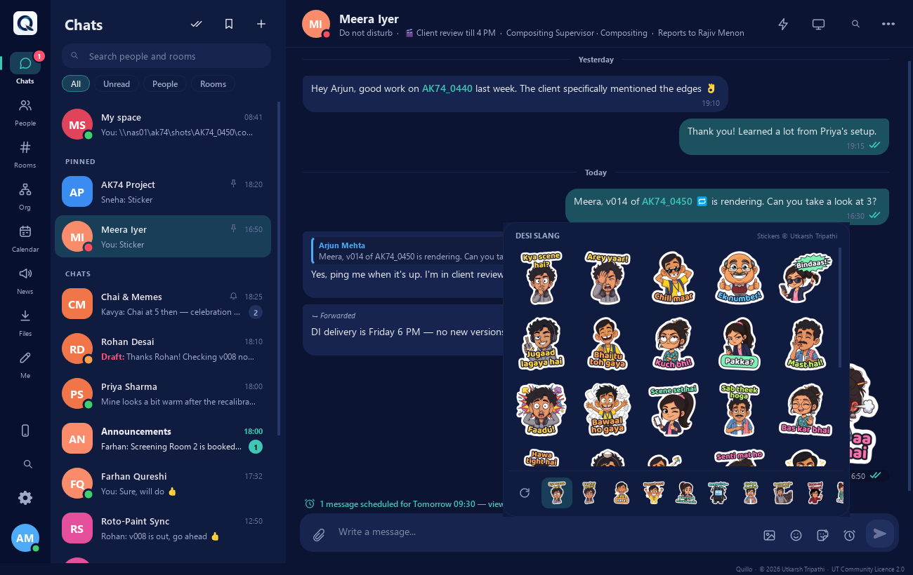
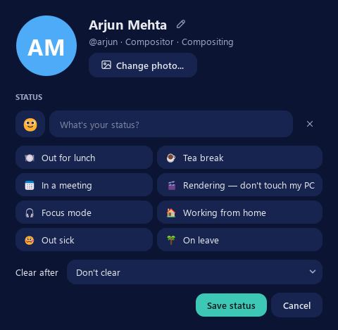
One always-on PC runs the Quillo server. Every artist PC runs the client, which finds the server on the network by itself. Nothing goes to the internet.
Chat, files, calendar, screen sharing. Install "just for me" without admin rights.
Accounts, rooms and messages in its own database, plus the server console. A small workstation or a VM is plenty.
Shared files, a copy of the database, the readable chat backup, the user list and nightly backups.
| Port | What it carries |
|---|---|
| TCP 5150 | Chat, files, screen sharing and the console, encrypted with TLS. |
| UDP 5151 | Automatic server discovery on the LAN. |
| TCP 5152 | Pipeline API for the render farm, only when you switch it on. |
With 500 people online at once, all 500 signed in within 2 seconds and about 390,000 messages were delivered with none lost, typically in 3 to 40 ms. The server used about 460 MB of memory.
PCs on a different subnet or VLAN can't hear the broadcast; just type the server's address once.
Everything Quillo needs is inside the two installers. There is nothing else to install, and Quillo never needs the internet.
Windows 10 or 11, 64-bit, for both the server and the clients.
One PC that stays on, or a VM. The database must be on a local disk of that PC.
Your studio LAN. The server needs TCP 5150 and UDP 5151 open; its installer can add the firewall rule.
Room for shared files, ideally a \\server\share on your file server. You decide how long files are kept.
There are two installers on the Releases page: the server goes on one machine first, then the client goes on every PC.
Quillo-Server-Setup. Install for me only needs no administrator and runs in the tray; Install for all users can add the firewall rule and a background service that runs with nobody signed in.\\server\share\...) so everything a new server PC would need is kept there too.admin / admin and choose a new password straight away. Add departments and people, or import them from the Excel template.Quillo-Client-Setup and leave the server address empty: it finds the server by itself. People sign in with the account you made for them.firewall_setup.bat, run as administrator, opens the ports.Installing for a whole floor? The client setup runs silently for GPO, PDQ Deploy or a login script:
Quillo-Client-Setup-1.11.1.exe /VERYSILENT /SUPPRESSMSGBOXES /NORESTART /ALLUSERSAdd /SERVER=192.168.1.10 only for PCs on another subnet.
Quillo is released by Utkarsh Tripathi under the UT Community Licence 2.0. In plain words:
On any number of PCs, at home or across a whole studio, including paid client work. What you make with it is yours.
Give unchanged copies to others, free of charge, with the credits.
Nobody may sell, rent or charge for Quillo or a changed copy of it.
Change it if you like: call it Quillo (modified by …) and send your changes as a pull request within 30 days.
Keep the licence, the Credits screen and the credit line at the bottom of the windows; Quillo won't start without them. This is a source-available licence, not an OSI open-source one. Read the full licence; questions to capsuleutkarsh@gmail.com.
Stickers © Utkarsh Tripathi, made for Quillo. Quillo is built on Python, Qt / PySide6, cryptography, OpenSSL and openpyxl, which keep their own licences (see third-party notices).